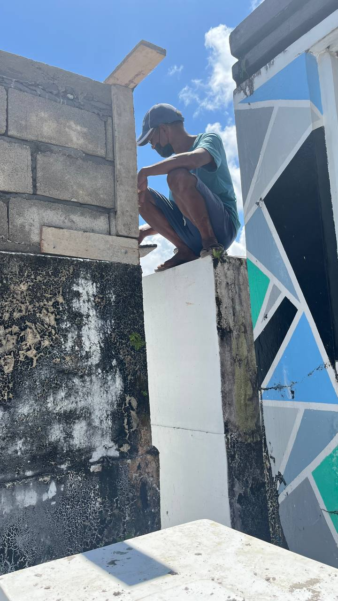

Danas

Ang mga naglilinis sa sementeryo sa Daet, Camarines Norte ay nagsimula sa kanilang hanapbuhay mula pagkabata. Lumaki sila sa paligid ng sementeryo kaya naging natural sa kanila ang pagtulong sa paglilinis at pag-aayos ng mga puntod. Unti-unti rin nilang natutunan na ang gawain ay maaari ring maging karagdagang kabuhayan para sa pamilya. Kabilang sa mga katuwang sa trabaho ang mga anak at ilang kamag-anak upang mas mapabilis at maayos ang paglilinis at pag-aayos ng sementeryo. Ang pagtutulungan ng pamilya ay malaking tulong sa pagsasakatuparan ng gawain at pagpapanatili ng kaayusan ng mga puntod. Ipinapakita ng kasaysayan ng kanilang hanapbuhay ang kahalagahan ng kultura ng pagtutulungan sa pamilya at ang pag-unlad ng kabuhayan mula sa simpleng gawain.
Ang mga naglilinis sa sementeryo sa Daet ay natutong maglinis at mag-ayos ng mga puntod dahil sa kanilang lumaki sa paligid ng sementeryo. Kapag may kontrata sa paglilinis at pagpipinta ng sementeryo, sinisiguro nilang maipakita ang pinakamataas na kalidad upang mapanatili ang tiwala ng kanilang mga suki. Ang proseso ng kanilang hanapbuhay ay nagpapakita ng kahalagahan ng kasanayan, disiplina, at dedikasyon sa pagpapabuti ng serbisyo.
Ang hanapbuhay na ito ay malaking tulong sa pamumuhay ng mga naglilinis sa sementeryo sa Daet dahil mabilis ang kita at maliit lamang ang puhunan. Sa panahon ng Undas, mas marami ang kliyente kaya mas abala ang trabaho. Upang masiguro ang maayos na serbisyo, sinisimulan nila ang paglilinis ng mga puntod isang linggo bago ang Undas. Ipinapakita nito na ang hanapbuhay sa sementeryo ay praktikal na pinagkakakitaan na nakadepende sa kasipagan at tamang pagpaplano.
Gawi

Ang mga naglilinis sa sementeryo sa Daet ay may regular na gawain tuwing linggo, kabilang ang pagwawalis, pag-aayos ng mga bulaklak, at pagtitiyak na maayos ang lahat ng kagamitan at paligid bago dumating ang mga bumibisita. Kabilang sa kanilang kinagawian ang pag-aalay ng kandila sa mga puntod ng yumaong kliyente bilang tanda ng paggalang at pagmamalasakit sa pamilya ng namayapa. Ang maayos na pagpapanatili ng sementeryo ay nakakatulong upang mapanatili ang kalidad ng serbisyo at kaginhawaan ng mga suki. Ang pang-araw-araw na gawain ay naglalarawan ng respeto sa mga namayapa at ng disiplina sa hanapbuhay. Bago simulan ang trabaho, inihahanda nila ang mga kagamitan tulad ng pala, itak, at walis sa isang lalagyan upang madaling dalhin at gamitin sa araw ng paglilinis. Mahalaga sa kanila ang mataas na kalidad ng serbisyo, pagiging maayos at malinis, pasensya, at maingat na paghawak sa bawat kagamitan. Upang masiguro ang maayos na serbisyo, sinisimulan nila ang paglilinis ng mga puntod isang linggo bago ang Undas.
Paniniwala

Kaunti lamang ang paniniwala o pamahiin na sinusunod sa kanilang hanapbuhay. Halimbawa, may ilang patakaran tulad ng pagbabawal sa pag-inom ng malamig na tubig habang nagtatrabaho upang maiwasan ang pasma. Sa pangkalahatan, nakatuon sila sa mga praktikal na gawain tulad ng paglilinis, pag-aalaga, at pag-maintain ng kaayusan sa sementeryo. Wala rin silang naranasang kababalaghan o kakaibang pangyayari na nakaapekto sa kanilang trabaho, kaya malinaw na ang kanilang hanapbuhay ay batay sa normal at praktikal na proseso.
Ipinapakita nito na ang mga naglilinis at nag-aalaga ng sementeryo ay higit na nakatuon sa pagiging maayos, epektibo, at sistematiko sa kanilang trabaho kaysa sa pagsunod sa pamahiin. Ang kanilang disiplina at dedikasyon ay mas mahalaga kaysa sa mga paniniwala, na nagpapakita na ang tagumpay at kasapatan sa trabaho ay bunga ng kasipagan, maayos na organisasyon, at tamang pag-aalaga sa kanilang responsibilidad.
Pamahiin

Karamihan sa mga naglilinis sa sementeryo ay walang partikular na pamahiin na sinusunod. Kung mayroon man, ito ay bunga lamang ng kinagisnan o personal na karanasan, tulad ng maingat na pag-iwas sa pag-apak sa ataul kapag kakalibing pa lamang. Sa pangkalahatan, hindi ito nakakaapekto sa kanilang kabuhayan, at tinitingnan nila ang kanilang trabaho bilang isang praktikal na pinagkakakitaan. Ang ganitong pananaw ay nagpapakita na ang trabaho ay nakabatay sa mga konkretong gawain at responsibilidad, at hindi sa pamahiin o tradisyonal na paniniwala.
Bagamat bahagi ang pamahiin sa kanilang kultura at tradisyonal na pananaw, ito ay hindi hadlang sa kanilang pang-araw-araw na gawain at kita. Ang tagumpay sa hanapbuhay ay nakasalalay sa kasipagan, pagiging maayos sa trabaho, at tamang pag-aalaga sa kapaligiran ng sementeryo. Sa ganitong paraan, malinaw na ang disiplina at dedikasyon sa trabaho ang mas mahalaga kaysa sa paniniwala, na nagsisiguro ng epektibo at maayos na kabuhayan sa kabila ng simpleng pamahiin.